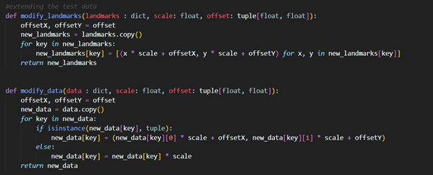

As this project’s primary focus was on the itch detection algorithm, the majority of the testing was directed towards ensuring it’s functionality. Consequently, we did not divert any resources to setting up a test strategy (although still informally tested) for both the python and HTML webcam capture and display systems. Their purpose is for visualizing the algorithm for debugging, testing, and gathering feedback, but not are not core proponent to the algorithm and end deliverable.
To cover all relevant aspects of the algorithm we’ve conducted 3 different types of testing: unit testing integration testing, and user acceptance testing.
The unit testing was the first line of testing that was setup during development to ensure that each function created was operating as intended and returned the desired results. The unit testing focused on testing the ItchDetection and FaceData classes as those were the main bulk of the complex logic and the sole proponents to the itch detection algorithm, which’s the primary deliverable.
The integration testing was dedicated to black box testing, ensuring that given a certain input, the output of the itch detection algorithm would consistently return the expected result. A large number of images were given to both measure an accuracy value of the algorithm and also to measure performance of the algorithm, as for higher quality images processing time can get very high.
Finally, we conducted user acceptance testing to gather feedback from users. As the result is an AI, UI design and user flow is not something we’re focused on, rather we will be mainly focusing on how accurate the detection feels to the user, and how unaccommodating the constraints may feel to the user (lighting, face positioning, minimal movement).
To perform unit tests, we used the built in python unit test library as it was sufficient for doing the necessary tests. Unit testing was run on both the ItchDetection and FaceData classes, by inputting certain data and checking if the output matches, note that if the output was a float the equality was tested to 8 decimal places due to the existence of floating point errors.
As running most functions depended on a class FaceData object being initialized first, there was a need to generate face landmarks data. Given that calculations such as center points and offsets needed to be calculated externally to guarantee the authenticity of the unit tests, and the large number of points (72 points) associated with each set of face landmarks, we needed to make a few optimizations to generating the test data to ensure that we did not spend half our time on generating test data.
The first optimization was to reduce the number of coordinates for each landmark. Given the design of the code, this change would not have any effect on the result. However, to make sure that the calculations such as mean and standard deviation are properly tested, we cannot have too few points either, therefore we constrained ourselves to using no less than 3 points to represent most of the landmarks.
The second optimization was to create functions to customize the data and the expected results. We made two functions, one to modify the landmarks by scaling and/or applying an offset, and one to modify the expected the data for expected outputs. The code below just traverses the dictionary of data and modifies them with a given offset (only if it is a coordinate) and multiplies it with a given scalar.

An example of modified data is when we apply an offset to a face, we expect the centers to move by the same offset as well, but we expect the offsets to stay the same as they are relative to the face. Using various permutation of these across different data points allows for a large range of test data to be generated.
Once we have access to the data, we just generated two test classes for the ItchDetection and FaceData classes, each with their own functions testing groups of functionalities, across the various amounts of test data. Overall, we have a total of 8 test cases:
· FaceData:
o Test center points
o Test offsets
o Test distance to vector function
o Test angle conversion function
· ItchDetection:
o Test scale difference
o Test itch location
o Test scaled comparison
o Test sensitivity change
When run in the command line, the following output is given:
The Integration we designed oversees testing the functionality, accuracy, and performance speed of the itch detection algorithm. This process involves running a set of images through the itch detection algorithm and matching them with the expected result.
The image used for the integration testing are arranged in the “test_images” folder (not pushed to the GitHub due to space constraints). The folder can then be populated by a series of different test conditions, in the example below the first test scenario is called “User1”, which represents a same user in a controlled environment.
Within the test scenario two folders must be included: “calibration” and “detection”, which will contain the images relating to user calibration and user itch detection respectively. Within the calibration folder the calibration images can then be added directly. Contrarily, the detection folder still needs additional folders. It needs to be populated by folders with the names respective to the itch locations (itch location names defined in config folder) which the images should match, e.g. for an image where you’d expect the algorithm to detect a bottom left itch, the image should go into the bottom left folder.

Upon running the integration test, the test script will go through each user, calibrate the ItchDetection class based on the calibration folder. It then calls the detectItch function on each landmark generated from the images in the detection folder and cross references the location from the ItchData output with the name of the folder to see if the algorithm gave the correct output. In the process it will output the outcome of each individual test, as well as the current config settings (sensitivity, resize factor) and calibration information. The runtime of each test scenario is also logged to the output with an average processing time per image given.
Example test:
Through the integration tests we were able to learn more about the algorithm. Firstly, calibration accuracy had a large impact on the success rates. This may seem obvious at first, but our calibration images were taken to be as still as possible, and despite this there were fluctuations in different lighting environments, which lead to less steady results. Secondly, as expected from our implementation, a head rotation about the z axis (up/down direction) will affect the output, and a head rotation about the x axis (left/right direction) will also affect the results, but if position is maintained throughout and after calibration it will still work but with decreased accuracy, although eyebrow sensitivity may have to be changed to increased (due to decreased perceived y change).
To get further understanding of how the itch detection feels when used live, we gathered a group of various testers to give us feedback on different aspects of the itch detection algorithm. As the main focus of the project is about the algorithm, we won’t be taking feedback on the UI or user flow. We also instructed our testers to follow the contains of correct lighting environment and head angles we’ve deduced from our integration tests.
For our testers, to get a full extent of the algorithm’s effectiveness in a real world settings, we decided to get a diverse mix of individuals which are in different physical conditions, which includes a quadriplegic individual, our target user base, as well as an individual affected by a less severe physical disability, and finally an individual without any physical disability.
Frank is a successful entrepreneur affected by quadriplegia. He is unable to move anything from the neck down due to a spinal injury he got on a business trip to Vietnam. He spends nearly all his time sitting at his ergonomic workspace.
Diandra is an acting teacher and is slowly recovering from an accident that left her with limited arm mobility. She is still able to touch her face, but it comes with a lot of difficulty. She spends most of her time at home using her computer in her disability friendly setup.
Dennis is a bartender that spends most of his days out and about. He has no physical disability. In his free time, he often sits down to watch his favorite tv shows or play video games.
For user acceptance testing we will be covering the following test cases:
1. Placing yourself in the proper lighting environment for optimal itch detection.
2. Maintaining the correct head angle for optimal itch detection.
3. Triggering the itch detection for all different zones.
4. Going about your sit down task and don’t try to trigger any itch detection.
|
Test Case |
Frank |
Diandra |
Dennis |
|
1 |
I’m always in the same place, so setting up the lighting environments was just a matter of having my caretaker move my lamp |
It was no issue, my room lighting already obeys the lighting environment and I always work in the same spot |
It was quite frustrating as I do everything on my laptop and have no set spot that I work at, therefore requiring me to always keep that in the back of my mind |
|
2 |
It was not a problem as I don’t often move my head and my webcam is already in the right position |
It could be a bit annoying sometimes because I move my face from time to time, so I need to adjust my webcam. |
It was quite a hassle as I often have my head in random positions while using my laptop, especially when I watch Netflix on my bed |
|
3 |
It worked wonders, I had no problem with using the itch detection |
It worked mostly well, except that I often had issues with the center and top detection, I believe this may be because of my hair slightly blocking my eyebrows |
It worked well, although I would often have to recalibrate if I changed to a different position as there were dips in accuracy. |
|
4 |
There was no issue, I could go about my day without it detecting an itch |
Sometimes it would flicker between random itch locations when I moved my head a bit, but it mostly worked well. |
Under normal circumstances it worked to well, but when I would play video games the detection gets finicky, maybe because I make many small movements. |
|
Additional comments |
I love the itch detection, it works great. I’d love to have it work in conjunction with my assistive robot, it would make my life much easier |
I can see myself using this from time to time, It works well but I do find myself having a few minor issues with it here and there. |
I don’t see myself using this as the constraints feel too limited, and additionally I don’t have much use for it as I can easily itch myself. |
Through the user acceptance testing we received a lot of feedback about the itch detection. Firstly, it is most suited with our targeted quadriplegic audience as they find themselves easily adapting to the constraints and having no issue with using it due to their reduced head movement. In comparison, above simply not needing it, people with no physical disability find it difficult to adapt to the constraints due to constant changes in environment. Additionally, the itch detection algorithm’s algorithm has its accuracy impacted by their constant unconscious head movements. A few other useful observations were that it may be difficult for users with long hair to utilize the AI due to their hair blocking the eyebrow detection, and it may also be inconvenient for users that frequently reposition their heads due to the need to recalibrate and maybe reposition their webcam. In conclusion, the user acceptance tests have shown that Itchy AI has not much issues when used by its targeted audience, but its still rough around the edges in some rare cases.